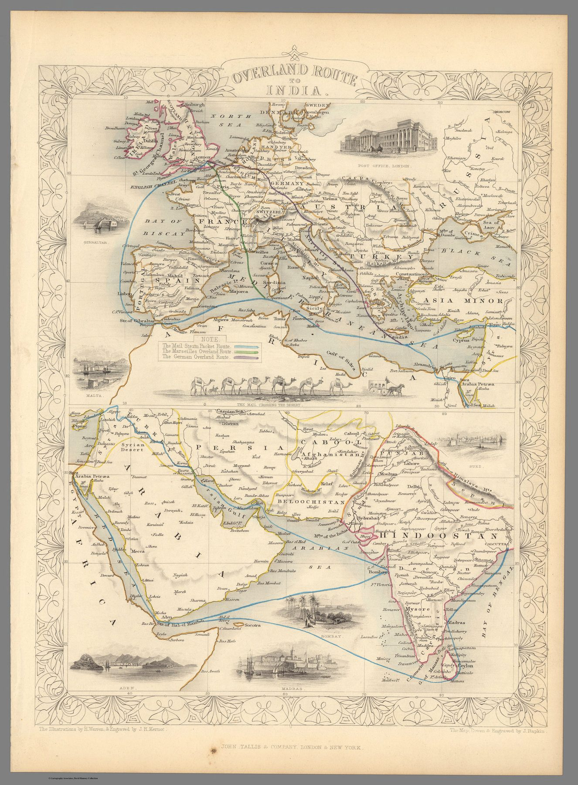

← Administered Empire and Victorian Atlas

The atlas object
The plate appeared in the Tallis Illustrated Atlas, edited by R. Montgomery Martin. John Rapkin drew and engraved the cartographic framework, while H. Warren supplied the pictorial embellishments. Two connected panels carry the route from Europe through the Mediterranean and Egypt to the Red Sea, Arabian Sea and India.
Before Suez
The celebrated “overland route” did not mean a continuous land journey. Passengers and mail travelled by sea to Egypt, crossed between Alexandria and Suez by river, road and later railway, and then re-embarked for India. The map turns that sequence of transfers into a single legible line.
A geography of connection
The sheet belongs to a nineteenth-century shift from mapping possessions alone to mapping the systems that bound them together: steamship passages, mail schedules, ports and transfer points. Distance is represented as something technology and organisation can overcome.
The gaze
India appears as the terminus of a route beginning in Britain. The governing concern is not what the subcontinent contains but how rapidly and reliably the metropole can reach it. This is imperial geography as logistics.